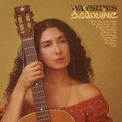

Music Reviews
-

Courtney Barnett Things Take Time, Take Time
Courtney Barnett's third album doesn't reference the pandemic, but perfectly captures a year of upheaval—from the novelty of letter writing to the fear of starting again.
Matthew Smith reviews... -

Ovlov Buds
Despite getting out their humorous side in song titles and social media, the Connecticut indie rock band nonetheless funnel all their passion and expertise into their exhilarating sound.
Peter Quinton reviews... -

Hana Vu Public Storage
Steeped in alt-rock and new wave influences and "you can't prove this is about you" vagaries, Vu's full-length debut is just the right balance of melodrama, defiance, and inhibition.
Gabbie Nirenburg reviews... -

Silk Sonic An Evening with Silk Sonic
Funk legend Bootsy Collins, global megastar Bruno Mars, and scourge of auto-correct Anderson .Paak team up to... actually, why have they teamed up?
Joe Rivers attempts to find the reason why... -

Self Esteem Prioritise Pleasure
On her second album as Self Esteem, Rebecca Taylor makes her case as the popstar 2021 needs.
Matthew Smith reviews... -

Snail Mail Valentine
Lindsay Jordan's second LP feel as intimate as her debut, but it does not just come from a place of introspection—she turns outward a little more, and the results are positively exhilarating.
Juan Edgardo Rodríguez reviews... -

The War on Drugs I Don't Live Here Anymore
On their fifth album, entitled I Don’t Live Here Anymore, our favorite synth-rockers treat us to a satisfying serving of what we need from them.
Ethan Gordon reviews... -

Bedouine Waysides
On her third album, the LA-based singer-songwriter revists a stockpile of songs she'd written over the years—nourishing and breathing new life into them.
Juan Edgardo Rodríguez reviews... -

Parquet Courts Sympathy for Life
Following on the heels of the critically acclaimed, and dare we say fun-filled, Wide Awake!, the band’s latest finds them venturing out into more funk and dance-inspired territory.
Mark Moody reviews... -

The World is a Beautiful Place & I Am No Longer Afraid to Die Illusory Walls
On their fourth LP, the Connecticut indie-rock collective continue to churn their life-affirming grand gestures with beautiful dark hues.
Juan Edgardo Rodríguez reviews...